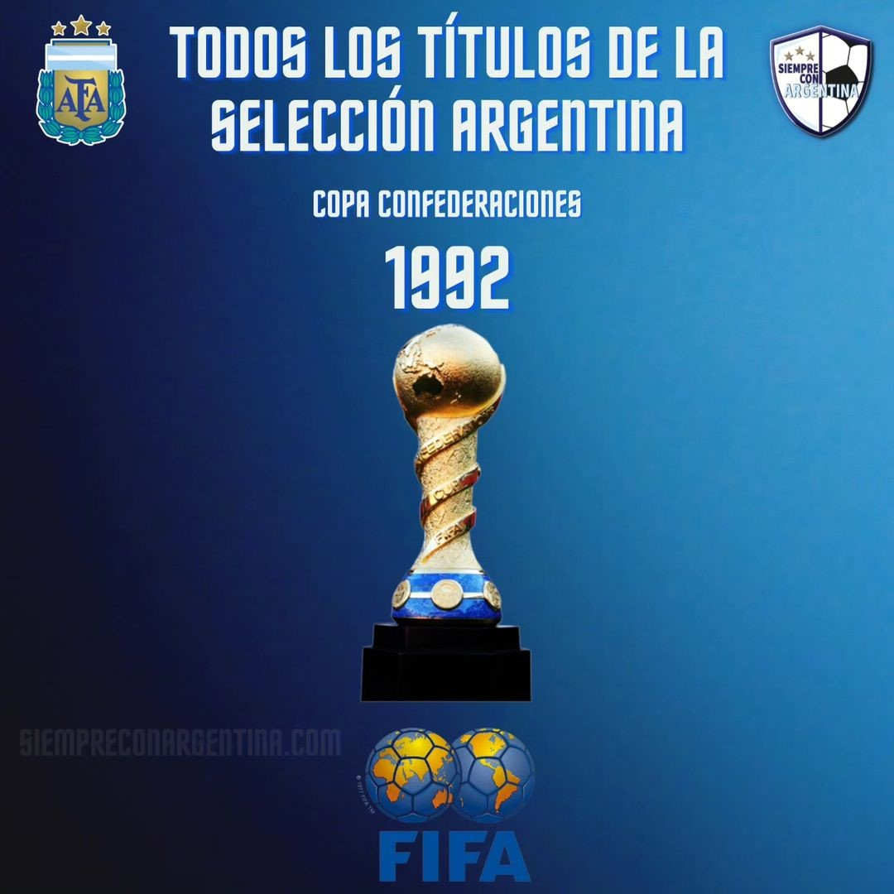

Historia de la Seleccion Argentina
La selección de fútbol de Argentina es el equipo formado por jugadores de nacionalidad argentina que representa a dicho país a través de la Asociación del Fútbol Argentino (AFA) en las competiciones oficiales organizadas por la Confederación Sudamericana de Fútbol (Conmebol), ente rector de ese deporte en América del Sur, y por la Federación Internacional de Fútbol Asociación (FIFA). Es campeona vigente a nivel confederativo, interconfederativo y mundial.
Planteles campeones del mundo
Argentina 1978
Arqueros: Héctor Baley, Ubaldo Fillol, Ricardo La Volpe
Defensores: Luis Galván, Daniel Killer, Jorge Mario Olguín, Miguel Oviedo, Rubén Pagnanini, Daniel Passarella (C), Alberto Tarantini
Mediocampistas: Norberto Alonso, Osvaldo Ardiles, Américo Gallego, Rubén Galván †, Omar Larrosa, José Daniel Valencia, Ricardo Villa
Delanteros: Daniel Bertoni, René Houseman †, Mario Alberto Kempes, Leopoldo Jacinto Luque †, Oscar Ortiz
DT César Luis Menotti


Argentina 1986
Arqueros: Luis Islas, Nery Pumpido, Héctor Miguel Zelada
Defensores: José Luis Brown †, Daniel Passarella, Néstor Clausen, José Luis Cuciuffo †, Oscar Garré, Oscar Ruggeri
Mediocampistas: Sergio Batista, Ricardo Enrique Bochini, Claudio Borghi, Diego Maradona (C) †, Héctor Enrique, Ricardo Giusti, Julio Olarticoechea, Carlos Daniel Tapia, Marcelo Trobbiani
Delanteros: Sergio Almirón, Jorge Burruchaga, Jorge Valdano, Pedro Pasculli
DT: Carlos Salvador Bilardo
Argentina 2022
Arqueros: Franco Armani, Gerónimo Rulli, Emiliano Martínez
Defensores: Juan Foyth, Nicolás Tagliafico, Gonzalo Montiel, Germán Pezzella, Marcos Acuña, Cristian Romero, Nicolás Otamendi, Lisandro Martínez, Nahuel Molina
Mediocampistas: Leandro Paredes, Rodrigo de Paul, Exequiel Palacios, Alejandro Gómez, Guido Rodríguez, Alexis Mac Allister, Enzo Fernández
Delanteros: Julián Álvarez, Lionel Messi (C), Ángel Di María, Ángel Correa, Thiago Almada, Paulo Dybala, Lautaro Martínez
DT: Lionel Scaloni

Titulos a lo largo de la historia
Disputó su primer partido internacional -que ganó por 6 a 0 contra Uruguay-, el 20 de julio de 1902, en la ciudad de Montevideo. Este es reconocido por FIFA. AFAy AUF como el primer partido oficial de ambas selecciones. Anteriormente, en 1901, se disputó un partido amistoso en Uruguay, pero este no es considerado oficial por la AUF ni por la FIFA, debido a que el representativo uruguayo era el Albion Football Club, así mismo la AFA no lo incluye en el conteo de sus mil partidos jugados. Es considerada como una de las grandes potencias del fútbol masculino internacional, siendo, a nivel de selecciones mayores, el país con más títulos oficiales ganados de la historia (22) y también con más subcampeonatos (21). En total, ganó 54 títulos internacionales oficiales, sumando los conseguidos a nivel de selecciones principal, olímpica y de juveniles. Actualmente, se ubica en el tercer lugar de la tabla histórica general de la Copa del Mundo. La ha conquistado en tres ocasiones: siendo el primer título de local en 1978, el segundo en México 1986 y el restante en Catar 2022. Además, fue finalista en otras tres ediciones: en Uruguay 1930, en Italia 1990 y en Brasil 2014. A nivel continental, ocupa el primer lugar de la clasificación histórica de la Copa América, y es junto a Uruguay el seleccionado que más veces se adjudicó el trofeo, ganándolo en quince ocasiones (1921, 1925, 1927, 1929, 1937, 1941, 1945, 1946, 1947, 1955, 1957, 1959-I, 1991, 1993 y 2021), y el que más subcampeonatos logró en la competición, con catorce (1916, 1917, 1920, 1923, 1924, 1926, 1935, 1942, 1959-II, 1967, 2004, 2007, 2015 y 2016). También, en 1992 se adjudicó la «Copa Rey Fahd» renombrada a partir de 1997 como Copa FIFA Confederaciones, en tanto que en 1995 y 2005 disputó el partido definitorio de dicho torneo.

- 